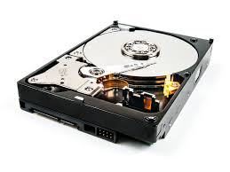

Lagring

I en dator finns det flera olika sorters lagrings minnen.
Det finns bland annat Internminne, hårddisk och cache-minne.
Datorminnena brukar delas upp i arbetsminnen och lagringsminnen.
Till arbetsminnen ingår bland annat ram- och cache-minnen.
Arbetsminnen är snabbare och dyrare än lagringsminnen och används
för tillfällig lagring av data när ett program körs. Denna data
förloras när datorn stängs av.
Det finns två huvudtyper utav hårddiskar. Mekaniska hårddiskar och solid state drive (SSD) hårddiskar. I de mekaniska hårddiskarna finns det roterande magnetiska skivor som en arm läser och skriver data ifrån. Eftersom att dessa diskar är mekaniska är de också långsammare än en icke mekanisk disk då en sådan inte behöver röra på sig. Mekaniska hårddiskar är däremot enklare att laga om de går sönder då det oftast är just en mekanisk del som gått sönder, till exempel armen. (bilden visar en mekanisk hårddisk). SSD diskar är i regel mycket snabbare men också mycket dyrare per GB. SSD diskar kan vara så snabba som 3000 MB/s men de flesta ligger runt 500 MB/s.
Cacheminnet är processorns eget minne, där lagras data som behöver bearbetas flera gånger av processorn. Cacheminnet har ofta stor inverkan på datorns prestanda då processorn inte behöver läsa information från RAM-minnet lika många gånger. Lagringsenheter värderas för bra och dåligt efter hur stort lagringsutrymme e har och hur snabba de är.
Det finns två huvudtyper utav hårddiskar. Mekaniska hårddiskar och solid state drive (SSD) hårddiskar. I de mekaniska hårddiskarna finns det roterande magnetiska skivor som en arm läser och skriver data ifrån. Eftersom att dessa diskar är mekaniska är de också långsammare än en icke mekanisk disk då en sådan inte behöver röra på sig. Mekaniska hårddiskar är däremot enklare att laga om de går sönder då det oftast är just en mekanisk del som gått sönder, till exempel armen. (bilden visar en mekanisk hårddisk). SSD diskar är i regel mycket snabbare men också mycket dyrare per GB. SSD diskar kan vara så snabba som 3000 MB/s men de flesta ligger runt 500 MB/s.
Cacheminnet är processorns eget minne, där lagras data som behöver bearbetas flera gånger av processorn. Cacheminnet har ofta stor inverkan på datorns prestanda då processorn inte behöver läsa information från RAM-minnet lika många gånger. Lagringsenheter värderas för bra och dåligt efter hur stort lagringsutrymme e har och hur snabba de är.
Källor: Enkel teknik, vad inehåller en dator
Kjell och company, Hårddiskar och SSD-diskar
Kjell och company, processor, cacheminne